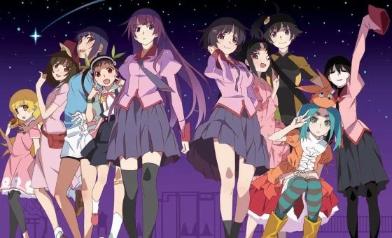

Las diferentes temporadas de Monogatari conforman una serie que es complicada de explicar. Es una obra audiovisual densa, repleta de momentos bizarros y escenas muy peculiares. Destaca ante todo su apartado estético, el diseño de personajes y su increíble animación. Eso sí, os recomendamos verla poco a poco y no consumirla de golpe para poder apreciar cada minuto de metraje completamente.
